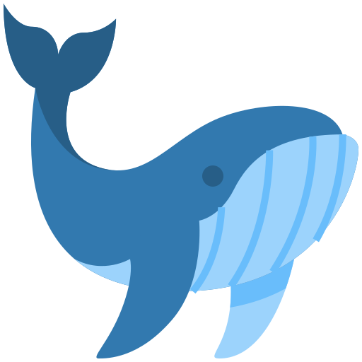
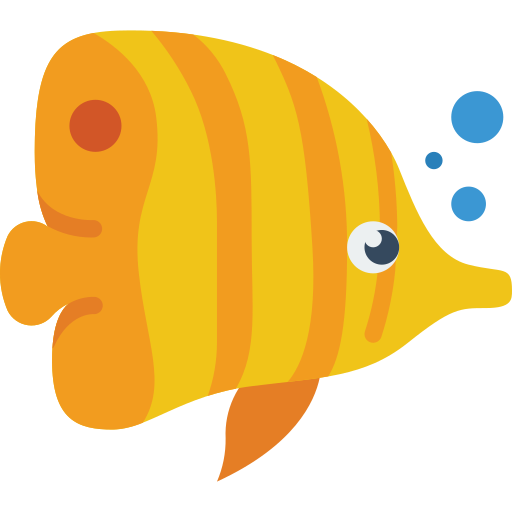
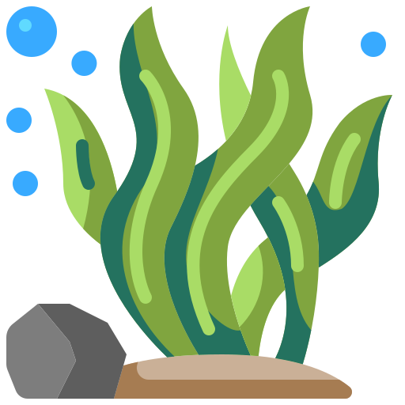
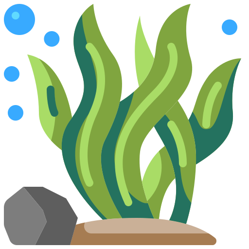
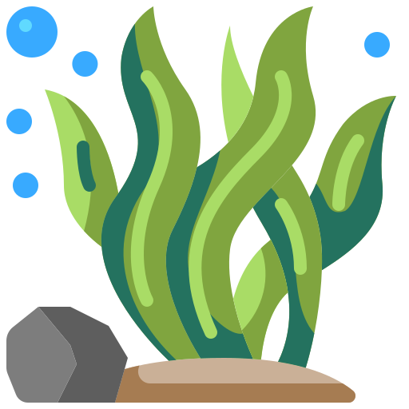
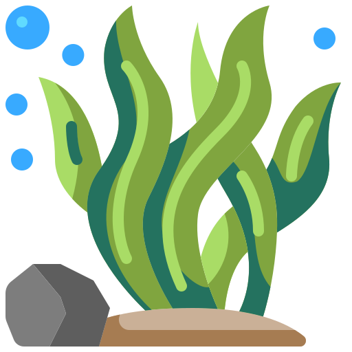

Vorgehen

 
 



Ideenfindung: Für uns war von Anfang an klar: Wir wollen ein Thema ansprechen, das eine große Bedeutung in unserer Welt hat. Nicht nur etwas kreieren, das schön aussieht, sondern auch einen größeren Wert hat. So suchten wir zunächst nach einem Thema, dass uns beide interessiert und welches man gut darstellen kann. Nachdem wir erst über Probleme wie Rassismus, Waldbrände oder Armut nachgedacht hatten, entschieden wir uns schließlich dazu, etwas zu wählen, dass noch nicht besonders bekannt ist und mehr Aufmerksamkeit verdient: die Auswirkung des Klimawandels im Meer. Da nun der Inhalt festgelegt war, versuchten wir uns eine passende Umsetzung zu überlegen. Dazu orientierten wir uns an den, im Unterricht vorgestellten Kreativmethoden zur Ideenfindung. Dabei gefielt uns besonders die Methode des Perspektivenwechsels bzw. des „Lebenstausches“. Nach kurzem Durchsprechen der Idee war bereits klar, dass die Methode sehr gut für unser Thema geeignet ist und so stand auch die grobe Vorgehensweise fest. Unsere Projektidee bestand zunächst aus einem 2-3 minütigen Kurzfilm, der hauptsächlich in Ego-Perspektive verfilmt werden sollte. Der Kurzfilm sollte gänzlich ohne Worte auskommen und die Probleme nur durch Musik, Mimik und eingefügte Geräusche erklären. Um die Ernsthaftigkeit kommunizieren zu können, sollte die Darstellung deshalb auch sehr emotional und drastisch sein. Innerhalb des Films sollte eine Person zu sehen sein, die sich in ihrer Wohnung mit ihrer Familie befindet. Es sollten verschiedene Szenen gezeigt werden, in denen Stück für Stück ein Teil der Familie verschwindet. Das sollte natürlich aufgrund von Problemen im Meer geschehen. So würde zum Beispiel eine Person an Plastik im Essen verenden oder mit einem Netz verschleppt werden. Das Ende sollte die Hauptperson allein in ihrer Wohnung zeigen. Nach mehreren Zwischenbesprechungen und konstruktiver Kritik wurde jedoch klar, dass die Umsetzungsidee nicht optimal war. Die Message würde nicht deutlich rüberkommen und es wäre nicht klar, ob der Film eher ernst oder humorvoll sein soll. Zudem war noch nicht klar genug, ob man das Leben aus Sicht eines Tieres in der Menschenwelt mit Tierproblemen oder einen Menschen in der Menschenwelt mit Tierproblemen sehen sollt. Also überdachten wir die Umsetzung noch einmal, behielten dabei aber natürlich das Thema und den Perspektivenwechsel bei. So entschieden wir uns schließlich für unsere endgültige Idee- die Nachrichtensendung. Nicht nur die einfache Umsetzung des Themas, aber auch die Möglichkeit verschiedene Probleme klar und verständlich vermitteln zu können, ohne den Zuschauer zu verwirren sprach für das Vorgehen. Mithilfe einer Nachrichtensendung könnten wir klar kommunizieren, dass es sich um unsere bekannte Welt handelt, aber unbekannte Probleme aufgetaucht sind. Zudem hätte der Film die nötige Seriosität und wäre trotzdem unterhaltsam anzusehen.
Entwurfsphase: So entschieden wir uns dafür verschiedene Auswirkungen des Klimawandels im Meer zu recherchieren und Tiere zu finde, die davon betroffen sind. Zu diesen sollten dann verschiedene, kleine Berichte geschrieben werden. Wir begannen damit, den Aufbau von Nachrichtensendungen zu recherchieren und strukturierten darauf aufbauend unseren eigenen Film. Dann brainstormten wir, um verschiedene Meldungen zum Thema zu finden und begannen ein mögliches Skript zu schreiben. Nach dem wir verschiedene Varianten notiert hatte, entschieden wir uns für einen groben Ablauf und begannen das endgültige Drehbuch zu schreiben. Nachdem der fertige Entwurf stand, begannen wir zu planen, was wir für den Dreh an Equipment und Material brauchten und regelten, woher wir alles bekommen konnten. Gleichzeitig machten wir mit der Hochschule Termine aus, um den Greenscreen und das Tonstudio zu benutzen. Nachdem die Zeitpunkte festgelegt wurden, ging es nur noch darum die nötigen Schauspieler zu finden. Dafür fragten wir auf Discord und WhatsApp nach Freiwilligen und glücklicherweise meldeten sich daraufhin genug Kommilitonen. Nach einer ausführlichen Planung und Organisation des Drehtags schafften wir es, alle nötigen Szenen an einem Tag zu filmen. Daraufhin begannen wir direkt die Szenen zu schneiden. Wenige Tage später nahmen wir zudem die Stimme des Off-Sprechers im Tonstudio der Hochschule auf. Nachdem wir den ersten Entwurf aus Video und Ton präsentierten entschieden wir uns aufgrund des Feedbacks jedoch dazu eine Szene erneut zu drehen, da der Hintergrund nicht zur Geschichte passte und den Zuschauer irritieren würde. Deshalb drehten wir die Szene noch einmal, nur diesmal mit WG-Hintergrund. Schließlich ging es dann an die Nacharbeitung. Nachdem der Schnitt fertig und der Ton angepasst war, wurde die Farbe korrigiert und der Greenscreen ersetzt. Außerdem wurden Anfangsanimation, Jingle, Statistiken und Wetterbericht erstellt und eingefügt. Im letzten Schritt wurde dann nur noch der Abspann animiert.
Link zum Drehbuch